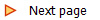

Map Zooming
The semantic zooming in NaviCell provides several levels of zooms with details, resembling navigation through geographical maps. Exploring the map from a detailed toward a top-level view is achieved by gradual exclusion of details while zooming out (Fig 2).
- The detailed zoom level is the original version of the map that contains all details as created in the CellDesigner map.
- The hidden-details zoom level hides entities modifications, complexes names and reaction numbers.
- The pruned zoom level represents only major routes on the map (canonical pathways).
- The top-level view zoom level is a territory map. Represents localization of different map parts (modules) similar to the representation of countries’ boundaries on geographical maps.
Fig2: NaviCell semantic zooming. The same area of the map is visualized using 4 zooms; each image is twice smaller that in the preceding zoom level. (A) In the detailed view, entity names, modifications and reaction IDs are visible. (B) In the hidden details view, part of textual information is removed. (C) In the pruned view, only major routes are visible. (D) In the top-level view, boundaries of map modules are visible.
